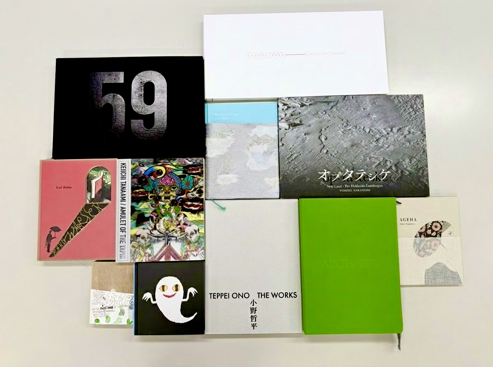

AIWORD BOOK MAKING SEMINAR3本立て
編集工数を減らして、
こだわりの本作りしませんか？
2026.11.26THU
日本教育会館 703号室
東京都千代田区一ツ橋2丁目6-2
参加無料各回30名・先着順
本のまわりの、
ぜんぶ。
企画・編集から、校正、印刷、製本、そして完成後のアーカイブまで。
アイワードは本づくりのあらゆる工程に携わり、自社開発のアプリや多様なツールのノウハウを磨いてきました。
その知見を、3つのセミナーでお伝えします。
株式会社アイワード
自社開発社史編集システムや編集支援ツールを自社で開発
使いこなし他社製品も含めたツールの選び方・組み合わせ方
実物の説得力作品集・図録・記念誌を作ってきた判断基準
①10:30〜記念誌をAIで
②13:30〜校正を、目で追わない
③15:30〜実物15冊が語る本作り
裏面へ →
3つのセミナー
1本ずつでも、通しでもご参加いただけます
0110:30–11:30AI社史・記念誌の
ご提案セミナー
制作が大変な記念誌も、アイワードのノウハウを入れ込んだAIで
その記念誌、1年で作れますか？ちゃぶ台返し、まだ傷は浅いです。
自社開発の「社史編集システム」をデモで紹介。過去資料のデータベース化から、事実の抽出・出典確認、目次案・粗原稿の生成までを一連の流れで解説します。
社史編集システム少人数で大型案件デジタルアーカイブハイデル記念誌の実例
0213:30–14:30編集支援ソリューション
セミナー
その校正作業、まだ目で追ってませんか？
引き上げた最終データ、本当に最終ですか？改訂翻訳本、全部訳し直しますか？
表記ゆれ・誤用の検出、オンライン赤字、索引作成、テキスト・画像の差分比較。4つの編集支援ツールで、確認作業を機械に任せる方法を実例で。
Just Right!Rev-FlowCollate ProHallmarker
0315:30–16:30特殊製本の有用性（仮）
実物15冊が語る こだわり本作りの全て
作品集・図録・写真集の実物を手に取りながら、用紙・印刷・特殊加工・製本の最新仕様と、こだわりとコストを両立させる考え方を解説します。

通しで聞くと、
御社のビジネスにプラスに。
① 大型案件を
受けられる
›
② 工数を
減らす
›
③ 付加価値を
提案できる
›
利益の出る
本作りへ
参加者全員にお渡しします
『ブック印刷のコト』
合本版
本作りの基礎と実例をまとめた冊子です
| 日時 | 2026年11月26日（木）
① 10:30〜11:30 ② 13:30〜14:30 ③ 15:30〜16:30 |
|---|
| 会場 | 日本教育会館 703号室（東京都千代田区一ツ橋2丁目6-2） |
|---|
| 参加費・定員 | 無料／各回30名（先着順・事前申込制） |
|---|
| 申込 | 要確認：URL・QR・電話・締切 |
|---|
一緒に本づくりをやりましょう。
株式会社アイワード